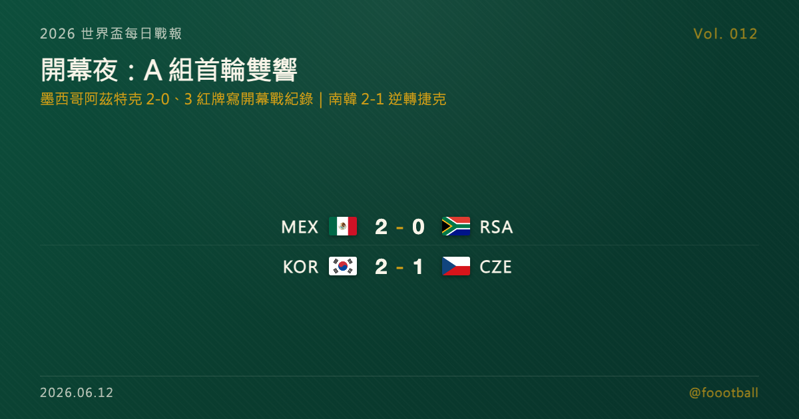

開幕夜：墨西哥 2-0 南非寫下開幕戰紅牌紀錄、Jiménez 世界盃首球，南韓逆轉捷克開啟亞洲第一勝
2026 世界盃 6/12 正式開踢：地主墨西哥在阿茲特克 2-0 勝南非，全場 3 張紅牌寫下世界盃開幕戰史上最多的紀錄，Jiménez 攻進個人世界盃首球；同日南韓 2-1 逆轉捷克、拿下亞洲本屆第一勝。A 組首輪打完，墨西哥與南韓各 3 分並列領先。

2026 世界盃每日戰報 Vol. 012
§1 即時比分戰報
2026 世界盃正式開踢。第一個比賽日只有 A 組的兩場，卻一點都不平淡：地主墨西哥在阿茲特克球場 2-0 擊敗南非，全場出現 3 張紅牌——這是世界盃開幕戰史上最多；同日南韓在 Guadalajara 從落後中逆轉捷克 2-1，替亞洲軍團拿下本屆第一勝。比分開始算真的，以下是揭幕日兩戰：
| 賽事 | 比分 | 場館 | 焦點 |
|---|---|---|---|
| 🇲🇽 墨西哥 — 🇿🇦 南非 | 2 - 0 | Mexico City Stadium（Estadio Azteca） | Quiñones 9'、Jiménez 66'（世界盃個人首球）；全場 3 紅牌、開幕戰史上最多 |
| 🇰🇷 南韓 — 🇨🇿 捷克 | 2 - 1 | Estadio Guadalajara（Estadio Akron） | Krejčí 59'（捷克先馳得點）；Hwang In-beom 67'、Oh Hyeon-gyu 80' 完成逆轉 |
兩場都落在 A 組，等於 A 組四隊在 24 小時內全部亮相、首輪一次打完。積分榜的第一個版本就此誕生——§2 是 A 組現在的形勢。
§2 排行榜區：A 組積分榜第一版
揭幕日由 A 組獨挑大樑。墨西哥與南韓雙雙首戰報捷、各拿 3 分，墨西哥靠淨勝球暫居榜首；先進球的捷克與兩度被罰下的南非則同以 0 分起步。一輪過後的 A 組長這樣：
| # | 球隊 | 賽 | 勝 | 和 | 負 | 進 | 失 | 差 | 分 |
|---|---|---|---|---|---|---|---|---|---|
| 1 | 🇲🇽 墨西哥 | 1 | 1 | 0 | 0 | 2 | 0 | +2 | 3 |
| 2 | 🇰🇷 南韓 | 1 | 1 | 0 | 0 | 2 | 1 | +1 | 3 |
| 3 | 🇨🇿 捷克 | 1 | 0 | 0 | 1 | 1 | 2 | −1 | 0 |
| 4 | 🇿🇦 南非 | 1 | 0 | 0 | 1 | 0 | 2 | −2 | 0 |
別忘了本屆的晉級規則：12 個小組、每組前兩名加上 8 個最佳第三名，共 32 隊晉級——小組第三不再注定回家，落後的捷克與南非都還沒出局，每一分都可能在三週後變成晉級關鍵。其餘 11 組從台北時間 6/13 起陸續首戰登場：6/13 凌晨 3 點加拿大對波士尼亞（加拿大主場開幕）、上午 9 點美國對巴拉圭（美國主場開幕），三地主全部亮相後，更多組別的積分榜才會接力填上。
§3 賽事摘要
- 墨西哥 2-0 南非：地主在自家的阿茲特克球場開出一個漂亮的頭——而且是歷史性的開頭。這是墨西哥第 8 次踢世界盃揭幕戰，卻是隊史第一次在揭幕戰贏球（先前 5 負 2 和）。Quiñones 第 9 分鐘的夢幻開局替全場定調，Jiménez 第 66 分鐘頭球再下一城；下半場墨西哥還讓 17 歲的 Gilberto Mora 替補登場，刷新墨西哥隊史世界盃最年輕出賽紀錄。真正寫進紀錄的是紅牌：南非的 Sithole 因阻擋單刀先被罰下、Zwane 又因經 VAR 認定的臉部肘擊（擊中墨西哥球員 Alvarado）追加一張，南非只剩 9 人應戰；墨西哥隊長 César Montes 也在終場前因一記凶狠剷球領紅。全場 3 張紅牌是世界盃開幕戰史上最多，也是 2006 年葡萄牙對荷蘭那場 16 強惡戰之後，世界盃單場再次出現 3 張以上紅牌。
- 南韓 2-1 捷克：本屆亞洲第一戰，南韓交出一份逆境中的答卷。捷克隊長 Krejčí 第 59 分鐘頭球先馳得點，一度讓南韓陷入落後——而上半場兩度錯失機會的隊長 Son Heung-min，最後沒有成為這場的主角；接棒的是 Hwang In-beom 第 67 分鐘的扳平球、與 Oh Hyeon-gyu 第 80 分鐘的致勝一擊，南韓在 21 分鐘內完成逆轉。對正踢自己第 4 屆世界盃、以 33 歲之齡披上隊長袖標的 Son 來說，球隊不靠他進球也能翻盤，本身就是一種深度的證明。亞洲本屆 9 隊參賽創紀錄，南韓這一勝替後面登場的隊伍開了個正面的頭。
§4 焦點觀察｜開幕夜：阿茲特克的四個畫面
第一個比賽日只有兩場，卻幾乎把一屆世界盃開幕該有的戲劇性都演了一遍。這一夜，有四個畫面值得記住。
畫面一：墨西哥等了 8 次的第一勝。 揭幕哨在墨西哥城的阿茲特克球場響起，這座球場成為史上第一座三度舉辦世界盃開幕的場館——1970、1986，到 2026。但對地主墨西哥來說，這一夜真正翻過的不只是「上屆在卡達小組止步」那一頁：這是他們史上第 8 次踢世界盃揭幕戰，卻是第一次贏球（先前 5 負 2 和）。在這座承載球隊所有歷史記憶的球場、用一場破紀錄的開幕戰勝利揭開主場世界盃，沒有比這更好的開場白——更別說這是阿茲特克睽違 40 年再次響起開幕哨，開賽前那段讓全場動容的國歌，本身就是這屆世界盃情感濃度的預告。
畫面二：一張、兩張、三張紅牌。 開幕戰通常以儀式感為主、火藥味為輔，這場卻反過來。南非的 Sithole 先因阻擋單刀被罰下，Zwane 又因 VAR 認定的臉部肘擊追加一張，球隊只剩 9 人；墨西哥隊長 Montes 也在終場前因凶狠剷球領紅。3 張紅牌是世界盃開幕戰史上最多的一次，也是自 2006 年葡荷 16 強戰以來，世界盃單場首見 3 張以上紅牌。值得一提的是，南非在兩度少打的情況下仍只丟 2 球、沒有崩盤，這份韌性會比比分更值得他們帶進接下來的賽程。
畫面三：Jiménez 等了多屆的那顆球。 Raúl Jiménez 第 66 分鐘的頭球，是他個人在世界盃舞台上的第一顆進球——多屆世界盃的等待，直到此刻才兌現。對一名走過嚴重頭部傷勢、一度被認為職業生涯堪憂的前鋒來說，這顆遲來的世界盃首球，情感重量遠超過比分上的那個「2」。這顆球也讓他追平 Jared Borgetti、並列墨西哥隊史射手榜第二，距離 52 球的隊史射手王 Chicharito 還差 6 球。
畫面四：亞洲第一勝，南韓不只靠 Son。 A 組另一場，南韓從落後中逆轉捷克、替亞洲軍團拿下本屆第一勝。值得一提的是，這場的進球功臣不是隊長 Son Heung-min——他上半場兩度錯失機會，球隊靠 Hwang In-beom 與 Oh Hyeon-gyu 接力翻盤。對一支正經歷世代交替的球隊來說，隊長未進球、仍能由他人挺身翻盤，是比 3 分更值得安心的深度訊號。別忘了這是亞洲足球史上最大規模的一屆：9 隊參賽創紀錄，南韓替整個亞洲軍團打了頭陣，這一勝會直接影響外界對亞洲球隊本屆的第一印象。
然後，世界盃才正要展開。 這一夜的意義其實超過 A 組的兩場比分：2026 是世界盃史上第一屆 48 隊、104 場的擴軍賽會，賽制、規模、跨三國共同主辦的形式全是新的——阿茲特克時隔 40 年再次承辦的開幕哨，等於替一個全新的世界盃時代揭幕。對球迷來說，這也意味著接下來 39 天的看點密度前所未有：12 個小組、每組首輪一打完就有積分榜雛形，而「8 個最佳第三名」這條新晉級線，會讓更多原本被看衰的球隊一路保有希望、把懸念撐得更久。A 組四隊已經全部亮相，但這只是這趟旅程的第一個夜晚。從 6/13 起，另外兩個地主加拿大、美國接力開幕，更多組別的故事才要陸續登場——本戰報會每天陪你追下去。
§5 明天看點
台北時間 6/13，世界盃迎來另外兩個地主的開幕日：凌晨 3 點加拿大對波士尼亞（多倫多 BMO Field），上午 9 點美國對巴拉圭（洛杉磯 SoFi Stadium）——三地主就此全部登場。再往後，第一支足球傳統強權也即將進場：巴西對上 2022 世界盃四強摩洛哥，是接下來最值得鎖定的一戰。A 組的下一輪、各組積分榜的成形，Vol. 013 接著報。
資料來源：ESPN / FOX Sports / NBC / FIFA / Sofascore 等多源交叉驗證（2026 世界盃 6/11 美加墨當地賽果、紅牌與紀錄、隊史數據）。賽程時間為台北時間換算，實際以官方公告為準。
常見問題
2026 世界盃揭幕戰結果是什麼？
台北時間 6/12，地主墨西哥在墨西哥城阿茲特克球場 2-0 擊敗南非，Quiñones 第 9 分鐘、Jiménez 第 66 分鐘各進一球；全場出現 3 張紅牌，是世界盃開幕戰史上最多。
開幕日 A 組的另一場誰贏了？
南韓 2-1 逆轉捷克。捷克 Krejčí 第 59 分鐘先進球，南韓由 Hwang In-beom（67 分鐘）與 Oh Hyeon-gyu（80 分鐘）完成逆轉，拿下本屆亞洲球隊第一勝。
A 組目前積分榜如何？
一輪過後：墨西哥（+2）與南韓（+1）同積 3 分、分居一二，捷克與南非暫時 0 分。本屆每組前兩名加 8 個最佳第三名共 32 隊晉級，落後球隊尚未出局。
Tags：世界盃, 2026 世界盃, 開幕戰, 墨西哥, 南韓, Jiménez